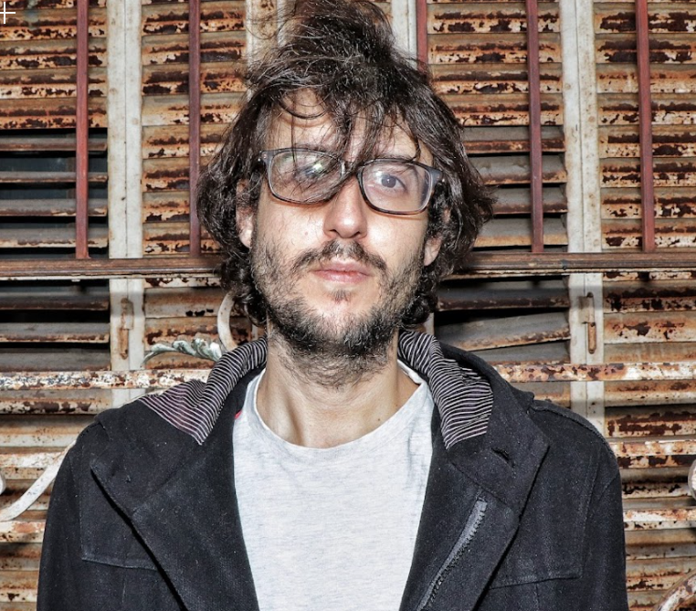

Bio
Gastón Massenzio (La Plata, 1983), es compositor, cantante, pianista y guitarrista Inició su trayectoria con la edición de su primer disco, un tributo a Elliott Smith. Desde ese momento en adelante se dedicó a componer e interpretar sus propias canciones. Su trayectoria discográfica cuenta con la edición de los siguientes discos propios: Lapsus (2013), Otra Luz (2014), La Presencia (2015), Niebla (2017) y Ocho Sueños (Los años Luz, 2019). Asimismo es el guitarrista de Les Inestables, banda liderada por el poeta y músico Daniel Amiano. En todas sus obras hay un compromiso genuino con la canción y una versatilidad sonora y compositiva que incluye arreglos sofisticados y experimentales de su autoría. Sus composiciones se alternan entre obras que remiten a tonos brillantes y frescos y otras más tenues y profundas. Es en esta ambivalencia sensorial y anímica que podemos apreciar lo amplio, complejo y rico de sus inquietudes artísticas. Vale mencionar y destacar que Massenzio fue miembro de la Orchestra of Crafty Guitarists liderada por el reconocido músico Robert Fripp. Ha tocado a lo largo de la argentina y en ciudades internacionales tales como Madrid, Berlín y Valparaíso. Durante el 2018 abrió el concierto de los japoneses toe y desde entonces recorrió diferentes salas de la escena local para repasar gran parte de su repertorio y presentar su últimos álbumes Niebla y Ocho sueños. Comenzó el 2021 brindando un concierto en el auditorio principal del CCK como pianista de Flopa Lestani e invitado de Paula Maffia. Gastón Massenzio ha compartido shows con artistas tales como Robert Fripp, Lucy Patané, Claudio Lafalce, Fernando Kabusacki, Flopa Lestani, Paula Maffia, Mene Savasta, Maxi Trusso, Daniel Tarrab, Fernando Samalea, Damian Nisenson y Tomas Jensen entre otrxs. Su nuevo disco homónimo, Gastón Massenzio (Los Años Luz / Epsa music) llega este 2021 con un profundo cambio en su lírica, en su voz e influencias musicales primarias para nacer como una obra absolutamente original y singular que ahonda en su sello autoral.
con el dominio en la experimentación entre las diferentes afinaciones de la guitarra y su voz, en esta oportunidad la estética y elección instrumental pasó a una sonoridad totalmente nueva ya que al maridaje se da entre el piano y la voz desplegando una atmósfera única, íntima y precisa. Sumado a esto están los sofisticados y deslumbrantes arreglos que le dan a cada canción una poción de belleza singular. Otra gran virtud de esta propuesta es que cuenta con artistas invitados muy destacados tales como: Fernando Samalea, Lucy Patané, Sami Abadi, Federico Linari, Sebastián Briganti, Karen Kuhn y Claudio Lafalce, productor del disco.
 Dossier